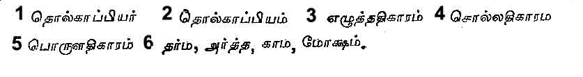
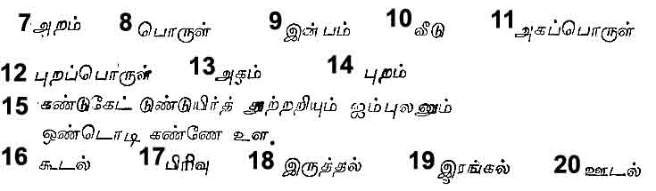
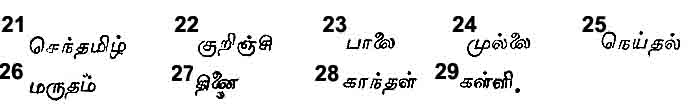
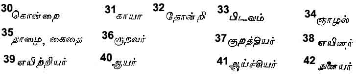
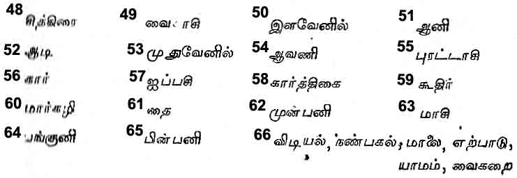
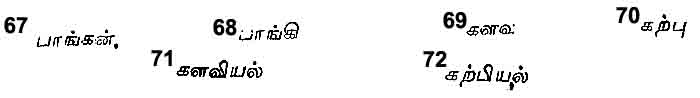

Love in Tamil Poetry
BY K. RAMARATNAM AIYAR, B.A.
Love and War are the two perennial themes which, as they make an instant appeal to every human heart and raise an immediate echo in every human bosom, have in every age and country enkindled the imagination and inspired the lyre of the Poet. Hence it is that the early literature in any language consists almost entirely of poems which either celebrate the love adventures or commemorate the martial achievements of some local or national celebrity, some real or legendary hero. Though to this principle Tamil Literature forms no exception, the poetical treatment of these themes in this language is, however, very peculiar, regulated as it is by an elaborate set of very rigid rules as binding and irrefragable as the Laws of the Medes and the Persians, to which rigorous conformity is enjoined on all literary aspirants to fame–and food.
Among the great languages of the world, ancient or modern, Sanskrit and Tamil alone can claim to possess anything like a perfectly comprehensive, systematic and well-codified Grammar of undoubted antiquity or undisputed authority. What the work of Panini is to Sanskrit, that the treatise of Tholkappiyar1 is to Tamil and both of them may be considered to be about 2000 years old. The ‘Tholkappiyam,’2 so named after its author, is the oldest extant and most authoritative text-book on Tamil Grammar, and is the basis of all later grammatical works, which professedly only restate in a condensed and more compendious form the rules elaborately set forth in the premier treatise, with here and there a few modifications introduced by later usage, or called for by the natural growth and development of the language, or necessitated by the importation of foreign elements into it.
There is said to have been a still older and more elaborate work, of which the ‘Tholkappiyam’ is stated to be but a better arranged and more systematic redactation and which is known as ‘Agathiyam’, so named after its author; the sage Agastiyar, of puranic fame according to many or some other namesake of his according to some. But of the scheme, scope or structure of this supposed original we know almost next to nothing, as it has been completely washed down the stream of time into the sea of oblivion, except a few stray ‘sutras’ quoted in later works as extracts there from. The ‘Tholkappiyam’ therefore is the Grammar of Grammars which even after the lapse of twenty centuries still continues to occupy the throne without a rival and exercise supreme sway. Time has writ no wrinkles on its brow, nor has custom staled its infinite beauties.
It is only after a considerable period of wild literary efflorescence in any language and with a view to set up a certain uniform standard of literary excellence and ensure the artistic beauty of literary productions that the need for a grammar of the language arises, and to supply that need a grammatical work appears. And as not only in the early stages but even for a long time afterwards all literary expression in any language invariably takes a poetical form, we may take it that the main, if not the sole, purpose of such a work is to guide and regulate the erratic flight of way-ward poetical genius across the realms of human thought or the fields of human activity. The study of the form and features, the frame and structure of the language, its orthography, etymology and syntax, is useful and valuable only in reference to its use and employment as a fit vehicle for the full expression of free flowing thought. Hence the true grammar is that which concerns itself not merely with the words but also with the thoughts and ideas which the words serve to express. This the ‘Tholkappiyam’ steadily keeps in view.
The ‘Tholkappiyam’ consists of three main parts, the ‘Elutt-atikaram,’3 the ‘Soll-atikaram.’4 and the ‘Porul-atika-ram,’5 corresponding roughly to the sections on Orthography,
on Etymology and Syntax, and on Prosody and Rhetoric of a modern English grammar. But it is the third part which is the most important, the other two being in fact but subservient and ancillary to it. In the first part the Letters of the Tamil Alphabet are considered both individually and as combined into words, whose function is to express individual conceptions. The second 'deals with Words both separately and as constructed into sentences, whose service is to express isolated thoughts. The third treats of poetical compositions, that is, the proper poetical structure of sentences individually and as built up into poems, whose duty is to express elegantly and effectively organised groups of thought.
The question naturally arises, Why and for what purpose does or should a Poet compose a poem, arranging, as it were, in martial array serried phalanxes of thought? An English grammarian would answer that the true function of poetry is to enlighten the understanding, influence the will, move the passions or please the imagination. But the ancient Sanskrit grammarian and the Tamil grammarian following in his wake had a very different, perhaps a higher, conception of the true office of the Poet.
The view of the Sanskrit moralists was that the great cardinal objects to be strenuously striven for by all right-minded men were only four, compendiously expressed by the words ‘Dharma,’ ‘Artha’ ‘Kama’ and ‘Moksha.’6. The Sanskrit grammarian accordingly laid down that these alone could legitimately engage the thought or employ the pen of an author, and, as a corollary to it, also held that no book was fit for study or deserved to be read, which did not either directly or indirectly deal with one or more of these four, and, a fortiori, that the noblest and most perfect work was that which treated of all these four.
The Tamil grammarians who had come under the influence of Sanskrit accepted this view and adopted this four-fold classification under, however, the Tamil nomenclature of ‘Arram’,7 ‘Porul’,8 ‘Inbam’9 and ‘Veedu’10 which are only Tamil equivalents of the Sanskrit terms. But the earlier Tamil writers, to whom Sanskrit literature and philosophy were unknown, though they also held a similar view as regards the legitimate purpose and province of Literature, had hit out a two-fold classification of the subject matter of Poetry with distinctively Tamil names, which the ‘Tholkappiyam’ has adopted and all later writers have followed. Thus in the third part of Tholkappiyam the proper material of poetry, or ‘Porul’ as it is called is broadly divided into two kinds and treated under the two heads of ‘Akap-porul’11 and ‘Purrap-porul’12 or more briefly ‘Akam’13 and ‘Purram’14, ‘Kama’, ‘lnbam’ or Love being denoted by the former and ‘Dharma’ and ‘Artha’ or ‘Arram’ and ‘Porul’ being expressed by the later. The use of these words in these specific senses is somewhat peculiar, needing a little elucidation. The word ‘Akam’ in Tamil means ‘inside’ and also the ‘mind’ which is inside the body, and ‘Porul’ means an ‘object’ or ‘thing’ applied in-differently both to material objects and mental feelings and experiences. All sensual pleasure (or pain), of even the lowest kind and connected but with anyone of the senses is something which can only be perceived by the senses concerned and felt and enjoyed by the mind within itself, but cannot be well expressed in words or communicated to others and hence it is an ‘Akap-porul.’ Much more so is ‘kama-inbam’ or sexual pleasure which is the highest and most intense of all sensual pleasures, being connected at one and the same time and in one and the same object, with all the five senses. As the great Tamil poet and moralist, Tiruvalluvar finely puts it,
Of Sight, Hearing, Taste and Touch and Smell
All pleasures in one lovely woman dwell.15
Hence the use of this word to denote Love which is the source of this supreme pleasure. All else is ‘Purrap-porul.’
Having considered, in a manner necessarily brief and imperfect, the position occupied by Love in literature in general and Tamil literature in particular, let us now proceed to explain the scheme adopted for this purpose. Love, to suit the requirements of poetry, is considered as marked by five main incidents or episodes. These are, (1) the accidental meeting of an young man and an young maid, the sudden birth of love at first sight between them, its further progress and fruitful culmination in regular marital union, called ‘Koodal's’16 or Union; (2) the absence of the husband abroad for a longer or shorter period at the call of duty or in pursuit of pleasure, in search of Knowledge or from love of wealth, called ‘Pirivu’17 or Separation; (3) the love-sick wife, staying at home, pining in silent grief and longingly looking forward to her lord's return home, called ‘Irutthal’18 or ‘Remaining at home’; (4) the outburst of her silent grief, when no longer bearable, into loud, pathetic lamentation, called ‘Irangal’19 or Weeping and Wailing; and (5) her jealousy born fits of ill-tempered scorn and disdain with which she meets her husband on his return home, his efforts to pacify her, and their happy reconciliation and reunion, called ‘Oodal’20 or ‘Love-quarrel.’
As fitting and appropriate scenes for these five love-episodes the five natural divisions of the country are cleverly utilized and a very full description of each of them is given with such a wealth of geographical detail as would enable a skilful poet to effectively interweave them into his poem for purposes of vivid local colour. Though a good deal of information is given a great deal is still left to be supplied by the poet's own observation, insight and imagination.
The country of the ancient Tamils–the land of ‘Sen-tamil’21 or pure Tamil–bounded on the north by the Venkada Hills–the modern Tirupati Hills–by the Bay of Bengal on the east, by the Kumari (river or mountain) on the south and the Arabian sea on the west, consisted of five main natural divisions, with well-marked differences as regards their physical features, fauna and flora, and the nature and character, the habits and occupations of the inhabitants. These are (1) the mountain regions, (2) the central arid desert, (3) the jungle tracts at and near the foot of the mountains, (4) the sea-side regions and (5) the river-fed arable country. After the most prevalent tree or flower peculiar to each these are named respectively the ‘Kurinji’22 the ‘Palai’23 , the ‘Mullai’24 the ‘Neidal’25 and the ‘Marudam’26.
The ‘Kurinji’ people were a warlike race of sturdy; huntsmen, living mainly by hunting diversified by the cultivation of ‘Thinai’27 grain and the practice of cattle-lifting. Their tutelary deity was Muruga. The most prevalent trees were the Teak, the Sandalwood, the Akil, the Vengai and the Asoku; the characteristic flowers, the ‘Kurinji’ and the ‘Kandal’28 the familiar beasts, the lion, the tiger, the bear, the elephant and the boar; and the common birds; the peacock and the parrot.
The ‘Palai’ people were a fierce race of murderous bandits living by rapine and plunder and by waylaying and robbing unprotected travelers and merchant caravans of their belongings and also by enlisting as mercenary soldiers under a king or chief. The tutelary deity was Durga, the goddess of war. The characteristic trees were the withered land leafless ‘Palai’, Iruppai and ‘Kalli’29 the prevalent flowers, the ‘Kuravam’ and ‘Maravam’; the common animal the wild-dog and the familiar birds the pigeon, the kite and the eagle. The ‘Mullai’ region was inhabited by a race of simple herdsmen who lived by the breeding of cattle, the sale of their dairy produce and the cultivation of pulses. Their tutelary god was Vishnu. The trees peculiar to this region were the Konrai,30 and the Kaya31 the characteristic flowers, the Mullai, the Thonri32 and the Pidavam,33 the prevalent animals, the deer and the rabbit and the common bird, the jungle-cock.
The ‘Neydal’ tract was the home of the hardy fishermen whose occupation was fishing and making salt and manufacturing toddy. They worshipped the sea-god Varuna. The prevalent trees were the Punnai and the ‘gnazhal’34 they peculiar trees, the Neydal and the ‘Thazhai’35 or ‘Kaithai’, the prominent animal was the shark and the common bird the king-fisher.
The inhabitants of the ‘Marutham’ country were an industrious race of agricultural people whose occupation was the Cultivation of rice, sugarcane and plantains. The god whom they worshipped was Indra, the lord of the clouds and the giver of rain. The Marutham, the Vanji and the Kanji were the most familiar trees; the lotus and the violet the common flowers; the prominent animals, the buffalo and the otter and the prevalent birds the swan, the heron, the stork and such other aquatic fowl.
Of the inhabitants of the ‘Kurinji’ land, the males were called ‘Kurravar’36 and the females ‘Kurrathiyar’37 of the ‘Palai’ land the men were named ‘Eyinar’38 and the women ‘Eyirriyar’,39 of the ‘Mullai’ land the men went by the name of ‘Ayar’40 and the females ‘Aychiyar’41 of the ‘Neydal’ land the males were known as ‘Nulaiyar’42 and the females ‘Nulaichiyar’43 and of the ‘Marutham’ land the men were known by the name of a ‘Uzhavar’44 and the women ‘Uzhathiyar.’45
These five broad divisions of the land are correlated to and connected with the five main episodes of love in such a manner that each particular locality may serve as a suitable background for the corresponding incident. Thus the ‘Kurinji’ is the scene of the lover's ‘Union’, the ‘Palai’ of their ‘Separation’, the ‘Mullai’ of the wife's ‘Staying at home’ in silent solitary, sorrow, the ‘Neythal’ of her pathetic lamentation, her ‘weeping and wailing’, and the ‘Marutham’ of those little love-quarrels which give no small zest to love.
The jungle tracts e'v'r to Vishnu dear,
The mountain slopes, fav'rite haunts of Skanda,
The river-fed regions by Indra blessed,
The sandy sea-sides under Varuna's care,
Mullai, Kurinji, Marutham and Neythal
Have by the wise ones been right aptly named.
The desert waste, arid, vast and dreary,
As Palai stands amidst the other four.46
The loving and wedding, the parting and leaving,
The staying at home and silently sorrowing,
The weeping and wailing to the wind and the wave,
And the fits of jealousy with its queer little quarrels.
Are the incidents proper to Kurinji and Palai
To Mullai and Neythal and Marutham fertile.47
Having thus determined and described the locality and landscape best-suited and most appropriate for the selected episodes, the grammarian next proceeds to consider the special seasons of the year and periods of the day favourable, from a natural as well as a poetic point of view, to each and to allocate them accordingly.
The Tamil year is divided into six naturally well-marked seasons, each of two months’ duration.
The first two months of the year, ‘Chittirai’48 and ‘Vaikasi’49 comprise the ‘Ila-venil’50 or spring season, the next two months of Ani51 and Adi,52 the Mudhu-venil53 or summer season, the next two months of Avani54 and Purattasi,55 the Kar,56 or rainy season, the next two months of Aippasi57 and Karthigai,58 the Koothir59 or cold season, the next two months of Margali60 and Thai,61 the Mun-pani62 or the season of the evening dews and the last
two months of Masi63 and Panguni,64 the Pin-pani65 or the season of the morning dews. These are the six major time divisions. The six minor time divisions are the six parts of the day, called Vidiyal,66 ‘Nan-pakal, Malai, Erpadu, Yamam’ and ‘Vaikarai,’ that is, the morning, noon and afternoon, the sunset, midnight and dawn, each of four hours' duration.
To the Kurinji episode the appropriate time is the ‘Koothir’ as well as the ‘Mun-pani’ season, and the mid-night; to the ‘Palai’, the ‘Venil’ and ‘Pin-pani’ season and the midday; to the ‘Mullai’, the ‘Kar’ season and the afternoon to the Neythal, all the six seasons and the forepart of the night; and to the Marutham all the six seasons and both the dawn and the morning.
Such, in brief, are the grand natural theatres with a rich variety of landscape and scenery and such the times and seasons with a wide range of suitable opportunities, specially designed for the enactment of this love-drama, of which the main characters are an young lover and an youthful maiden. In addition to these there are several minor characters who bear important parts in it. But of these the two most essential are the ‘Pangan’67 and the ‘Pangi’,68 the clever, sharp-witted, very intimate and faithful and male and female companions of the hero and the heroine respectively.
Before proceeding to give a detailed account of the course of such true love from the mountain to the sea through the intervening regions of Mullai, Palai and Marutham, one other matter has to be explained. The whole conduct of the two lovers which considered under one aspect, is divided into ‘Koodal’, ‘Pirivu’, ‘Irutthal’, ‘Irangal’ and ‘Oodal’, gets separated, looked at from another point of view, into two parts known as ‘Kalavu’69 (i.e., stealth or secrecy) and ‘Karpu’70 (i.e., chastity) all the incidents prior to and culminating in the regular union of the two lovers under the bonds of wedlock being placed under the former head and all the subsequent events under the latter. The two classifications, both of which are more or less arbitrary and artificial, are in fact overlapping, ‘Kaluvu’, including all the several events connected with the ‘Kurinji’ episode of ‘Koodal’ and ‘Karpu’ embracing all those pertaining to the ‘Mullai’, ‘Neithal’ and Marutham’ incidents of ‘Irutthal’, ‘Irangal’ and ‘Oodal’, the ‘Palai’ episode of ‘Pirivu’ with its concomitants being connected with and incidental to both, as such separation may be the parting of the lover from the company of his dear companion from various causes during the pre-marital stage or the absence, necessitated by business or occasioned by pleasure, of the husband from home and the society of his newly-wedded wife, during the post-marital stage.
As all the pre-marital meetings of the lovers are quite clandestine and generally under the secrecy of the night and unknown to any but their most intimate associates, they are called Kalavu, and as all the post-marital incidents are in some way or other associated with the chastity of the wife and her decorous demeanour they are designated by the name of ‘Karpu’, The whole subject is treated, in elaborate detail under the heads of ‘Kalav-iyal’71 and Karpp-iyal,72 of which ‘Kalav-iyal’ will form the subject of the next article.





